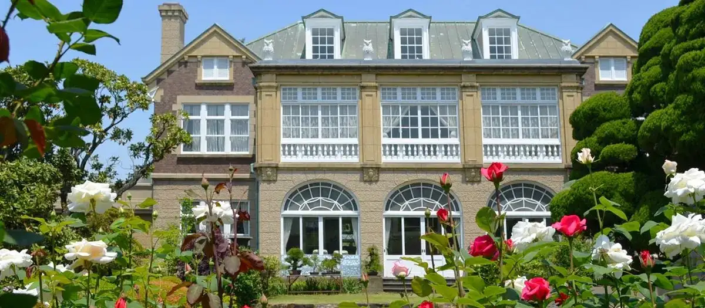
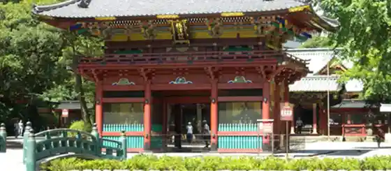
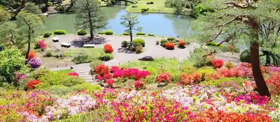
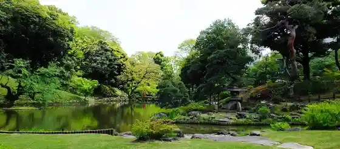
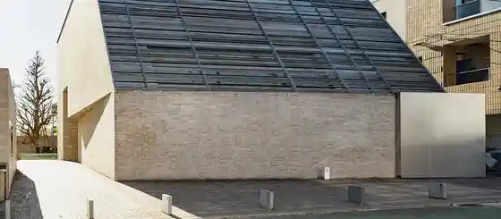

Bunkyo, Tokyo: things to do, food and stays
Bunkyo · Tokyo
Bunkyo
Highlighted on the Tokyo map.

Sights
Hatoyama Hall
Nezu Shrine

Rikugi Sono

Higo Hosokawa Garden

Bunkyo Ritsu Mori Ogai Memorial Museum

Toyo Bunko Museum
Koishikawa Korakuen
Tokyo Waterworks Historical Museum
Hosho Nogakudo
Kyu Yasuda Kusunoki Osu Tei Garden
Takehisa Yumeji Museum
Insatsu Museum
Yayoi Museum
Koishikawa Botanical Garden
Dining
Watabe
わたべ

Seafood restaurant in Bunkyo, Tokyo.
Yakitori Nishiki
焼鳥 にしき

Meat restaurant in Bunkyo, Tokyo.
Avranches Guesnay
アヴランシュ・ゲネー

Sweets and bakery shop in Bunkyo, Tokyo.
Ma Poule
マ プール

European restaurant in Bunkyo, Tokyo.
Ikkou An
一幸庵

Sweets and bakery shop in Bunkyo, Tokyo.
Honkatry
ホンカトリー

Chinese or Asian restaurant in Bunkyo, Tokyo.
Jinmei Bi
神名備

Noodle restaurant in Bunkyo, Tokyo.
Nezu Yakitori Terusumi
根津 焼鳥 照隅

Meat restaurant in Bunkyo, Tokyo.
EST!

Izakaya or bar in Bunkyo, Tokyo.
canade

European restaurant in Bunkyo, Tokyo.
Menya Suzuharu
麺屋鈴春

Noodle restaurant in Bunkyo, Tokyo.
Chuka Soba Nishino
中華蕎麦にし乃

Noodle restaurant in Bunkyo, Tokyo.
Gunrindo
群林堂

Sweets and bakery shop in Bunkyo, Tokyo.
MENSHO

Noodle restaurant in Bunkyo, Tokyo.
Jikaseibaisen Coffee Mijinko
自家焙煎珈琲みじんこ

Cafe in Bunkyo, Tokyo.
à table Reservation
a table

European restaurant in Bunkyo, Tokyo.
Hoei Reservation
豊栄

Noodle restaurant in Bunkyo, Tokyo.
Karinto Yushima Kagetsu
かりんとう ゆしま花月

Sweets and bakery shop in Bunkyo, Tokyo.
Pâtisserie Très Calme
パティスリートレカルム

Sweets and bakery shop in Bunkyo, Tokyo.
Edogawa Ishibashi
石ばし

Seafood restaurant in Bunkyo, Tokyo.
Menya Nemuru
麺屋 ねむ瑠

Noodle restaurant in Bunkyo, Tokyo.
Ramen Daishi
ラーメン大至

Noodle restaurant in Bunkyo, Tokyo.
Hashimoto
はし本

Seafood restaurant in Bunkyo, Tokyo.
Shisen Tantanmen Aun Yushima honten
四川担担麺 阿吽 湯島本店

Noodle restaurant in Bunkyo, Tokyo.
Tsuruse Yushima honten
つる瀬 湯島本店

Sweets and bakery shop in Bunkyo, Tokyo.
TIES
タイズ

Cafe in Bunkyo, Tokyo.
La Barrique Tokyo
リストランテ ラ・バリック トウキョウ

European restaurant in Bunkyo, Tokyo.
Koishikawa Nakasei Reservation
小石川 中勢以

Meat restaurant in Bunkyo, Tokyo.
Kanmidokoro Mitsubachi Honten
甘味処 みつばち 本店

Sweets and bakery shop in Bunkyo, Tokyo.
Yoshoku Wine Fritz
洋食・ワイン フリッツ

European restaurant in Bunkyo, Tokyo.
Koike no Iekei
こいけのいえけい

Noodle restaurant in Bunkyo, Tokyo.
Soba Kokoro
蕎心

Noodle restaurant in Bunkyo, Tokyo.
Nezu no Taiyaki
根津のたいやき

Restaurant in Bunkyo, Tokyo.
ＤＡ ＰＥＰＩ
ダペピ

European restaurant in Bunkyo, Tokyo.
Hongare Chuka Soba Gyolai
本枯中華そば 魚雷

Noodle restaurant in Bunkyo, Tokyo.
Stay
Hotel Chinzanso Tokyo
ホテル椿山荘東京

Hotel Chinzanso Tokyo is a hotel in Bunkyo, Tokyo.
Tokyo Dome Hotel
東京ドームホテル

Tokyo Dome Hotel is a hotel in Bunkyo, Tokyo.
Richmond Hotel Tokyo Suidobashi
リッチモンドホテル東京水道橋

Richmond Hotel Tokyo Suidobashi is a hotel in Bunkyo, Tokyo.
Dormy Inn Korakuen
ドーミーイン後楽園

Dormy Inn Korakuen is an inn in Bunkyo, Tokyo.
Hotel Tokyo Garden Palace
ホテル東京ガーデンパレス

Hotel Tokyo Garden Palace is a hotel in Bunkyo, Tokyo.
Koraku Garden Hotel
後楽ガーデンホテル

Koraku Garden Hotel is a hotel in Bunkyo, Tokyo.
APA Hotel <Ochanomizu-Ekikita>
アパホテル〈御茶ノ水駅北〉

APA Hotel <Ochanomizu-Ekikita> is a hotel in Bunkyo, Tokyo.
the b suidobashi
the b 水道橋

the b suidobashi is a place to stay in Bunkyo, Tokyo.